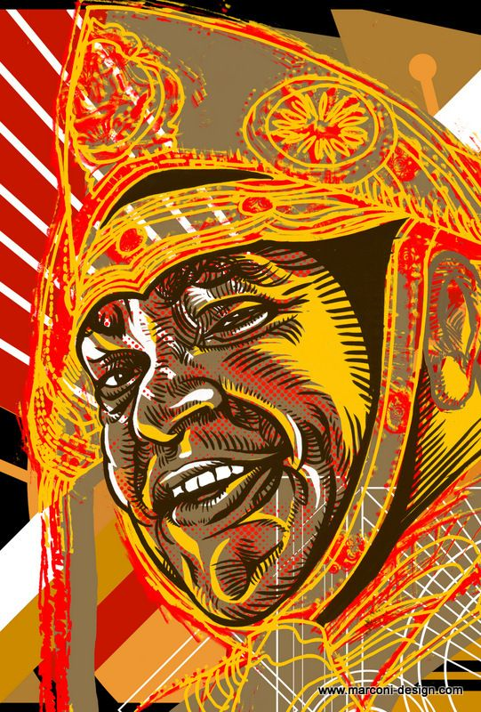

CURIOSIDADES SOBRE O REI DO BAIÃO
O grande rei do baião, Luiz Gonzaga é lembrado constantemente! Suas músicas até hoje embalam quadrilhas e
festas em todo o Brasil. Mas você sabe de onde ele veio? Quem foi? Então vamos aprender mais sobre o
Gonzagão!

Luiz Gonzaga